Week 2 – Computer-Aided Design (CAD)#
This week was focused on Computer-Aided Design (CAD).
The main goal was to understand how designs move from 2D to 3D, learn the difference between raster and vector images, and explore different 3D modeling approaches such as B-Rep and F-Rep.
Rather than focusing on a single software, this week emphasized understanding design workflows, file types, and how design decisions affect fabrication.
What I Learned This Week#
2D Design#
- Difference between raster and vector images
- Raster editing tools:
- Photopea
- Affinity
- Vector design tools:
- Inkscape
- Affinity Designer
3D Design#
- Different types of 3D modeling:
- Boundary Representation (B-Rep)
- Function Representation (F-Rep)
- Introduction to parametric and non-parametric workflows
- Focused learning on:
- Fusion 360
- SolidWorks
- Blender
Software Used#
2D Tools#
- Affinity Designer
- Photopea
- Inkscape
3D Tools#
- Fusion 360
- SolidWorks
- Blender
- 3D Builder
- OpenSCAD
- TinkerCAD
- Onshape
Other Tools#
- HandBrake (for video compression)
Licensing and Software Access#
Fab Academy provided access to both Fusion 360 and SolidWorks as part of the course.
-
Fusion 360
- Access was provided through Fab Academy
- I already had prior experience with the software and continued using it for modeling and exploration
-
SolidWorks
- Access was provided through the Fab Academy Makers / Makerspace license
- My existing student license was about to expire, so I opted to use the Fab Academy provided license
- Installation was done using the 3DEXPERIENCE Launcher and the SolidWorks installation manager
-
Onshape
- Access provided through Fab Academy (cloud-based CAD)
Since I am already familiar with Fusion 360 and SolidWorks, I decided to use these tools for most of my work during Fab Academy.
Weekly Assignment#
Individual Assignment#
- Model (raster, vector, 2D, 3D, render, animate, simulate, etc.) a possible final project
- Compress images and videos
- Upload design files and explanations to the documentation page
Weekly Schedule#
| Day | What I Did |
|---|---|
| WED | Catch-up session with Neil |
| THU | Exploring Fusion 360 |
| FRI | Introduction to raster and vector tools |
| SAT | Exploring SolidWorks |
| SUN | Creating 2D and 3D models |
| MON | Continued modeling |
| TUE | Regional review |
Understanding Raster vs Vector Graphics#
Vector Graphics#
- Vector files use mathematical equations to define shapes and curves
- Each element is defined by paths and functions
- Can be scaled infinitely without losing quality
- Commonly used for:
- Logos
- Laser cutting
- CNC machining
- SVG and DXF files
Raster Graphics#
- Raster images are composed of pixels
- Image quality depends on resolution
- Zooming in causes pixelation
- Commonly used for:
- Photographs
- Textures
- Image editing
As someone with limited prior experience in 2D design, this comparison helped me understand why vector graphics are preferred for digital fabrication.
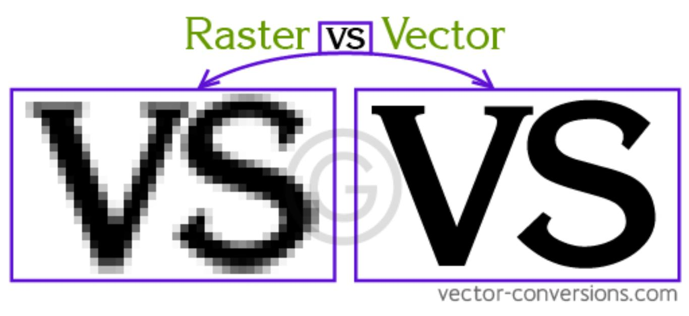
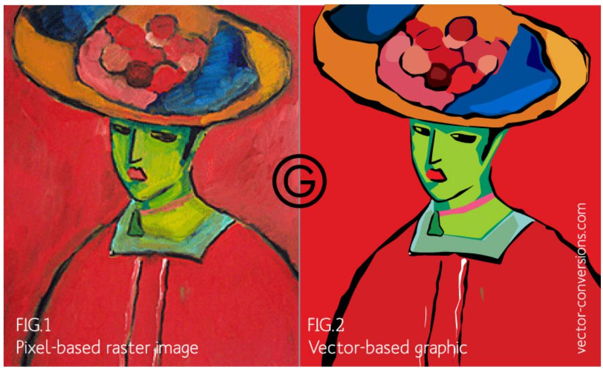
The explanation of raster and vector graphics was referenced from
https://vector-conversions.com/vectorizing/raster_vs_vector.html
Installing the Required Software (Windows)#
Vector Design#
- Inkscape
- Downloaded from the official website: https://inkscape.org/release/
- Installed using the Windows installer
- Used for creating and editing vector (SVG/DXF) files
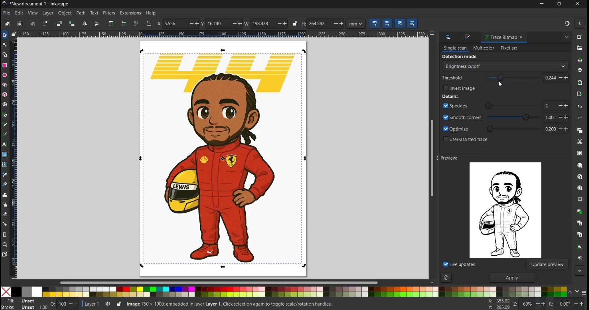
Raster Design#
- Photopea
- Web-based raster editor: https://www.photopea.com/
- No installation required
- Used for basic raster image editing and comparison with vector files
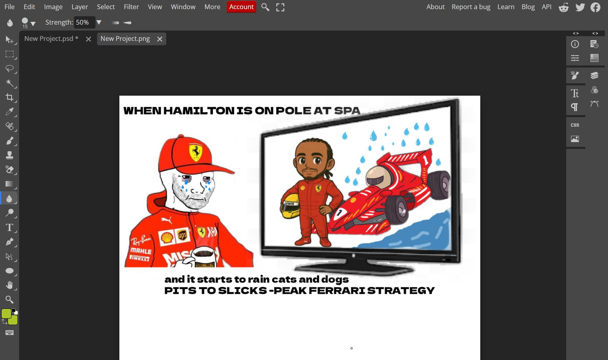
- Affinity
- Downloaded from: https://affinity.serif.com/
- Installed on Windows
- Supports both raster and vector workflows
3D CAD Software#
- Fusion 360
- Access provided through Fab Academy
- Downloaded from: https://www.autodesk.com/products/fusion-360
- Installed using the Windows installer
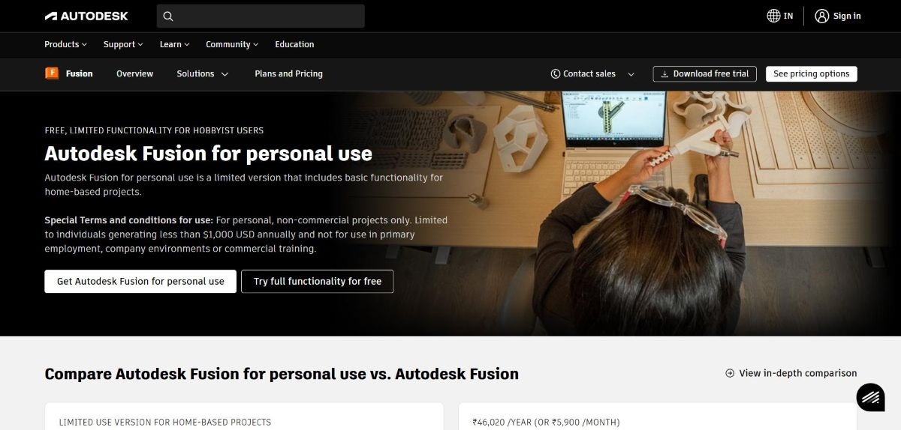
- SolidWorks
- Access provided through Fab Academy Makers / Makerspace license
- Installed using the 3DEXPERIENCE Launcher: https://www.3ds.com/3dexperience
- Followed the SolidWorks installation manager steps
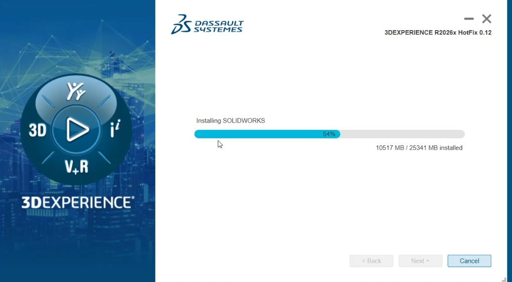
- Blender
- Downloaded from: https://www.blender.org/download/
- Installed using the Windows installer
- Used for non-parametric 3D modeling and visualization
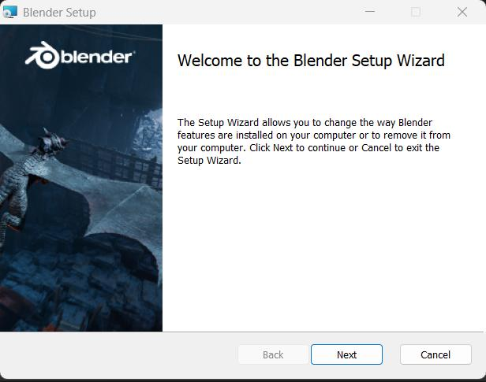
- OpenSCAD
- Downloaded from: https://openscad.org/downloads.html
- Installed using the Windows installer
- Used for script-based, parametric 3D modeling
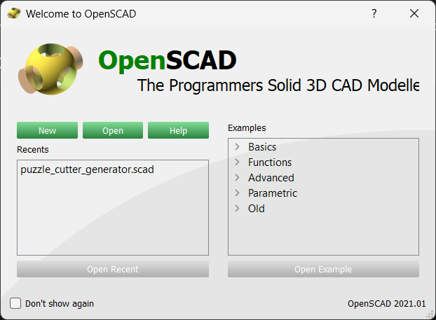
Media Compression#
- HandBrake
- Downloaded from: https://handbrake.fr/
- Installed on Windows
- Used to compress videos before uploading to the Fab Academy site
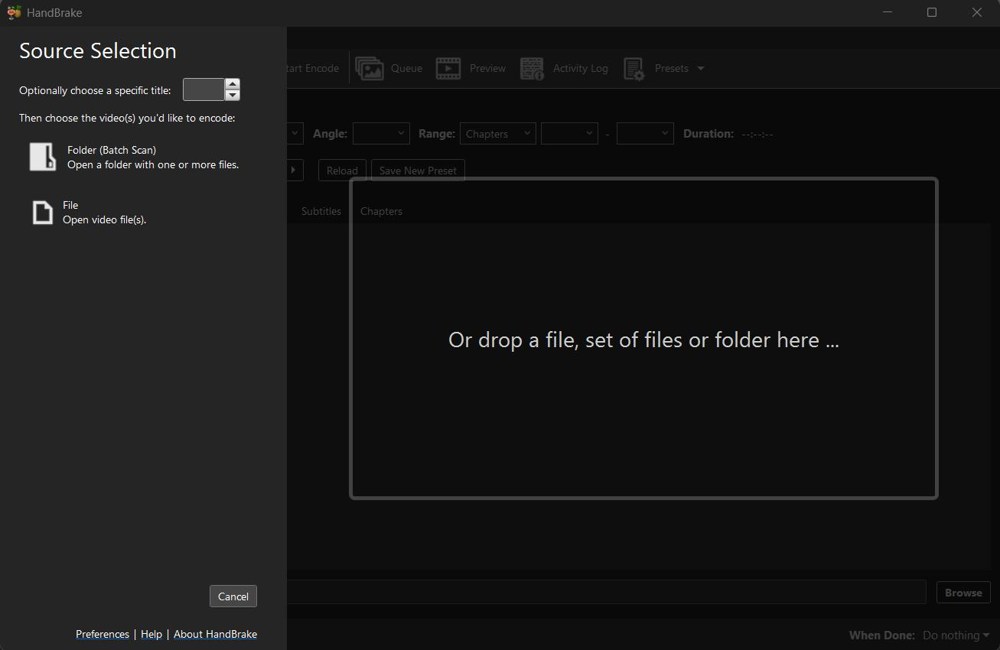
2D Designing#
Vector Design – Inkscape#
I started my 2D design exploration with Inkscape, focusing on vector-based workflows.
As a fun and relatable exercise, I decided to create a meme related to Formula 1, specifically referencing Lewis Hamilton, Ferrari, and their race strategy.
I downloaded a few reference images from the internet and experimented with:
- Trace Bitmap
- Adjusting thresholds
- Cleaning up paths and nodes
This helped me understand how raster images can be converted into vectors and how editable paths behave in a vector environment.
Inkscape Meme Output:
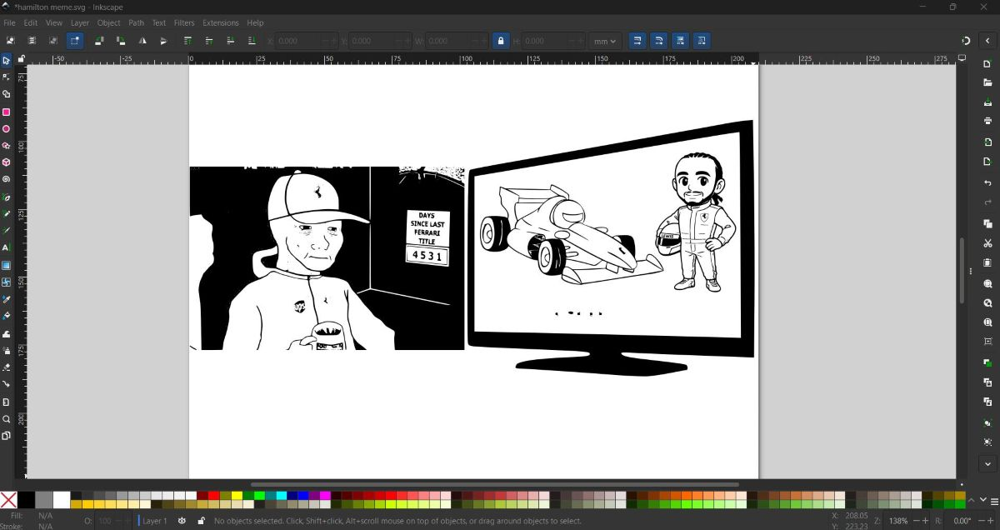
Raster Design – Photopea#
Next, I moved on to exploring raster graphics using Photopea.
Since I had some prior experience with Photopea, it felt intuitive and easy to work with.
I recreated the same meme using raster tools to clearly understand the difference between:
- Pixel-based editing
- Resolution dependency
- Raster manipulation workflows
This exercise helped me directly compare raster vs vector approaches for the same design.
Photopea Meme Output:
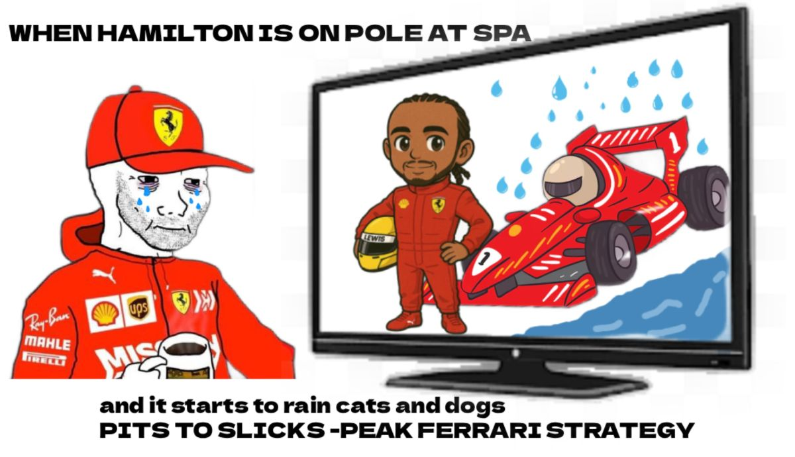
2D Designing Using Affinity#
For my 2D design workflow using Affinity, I decided to start with a precise sketch created in Fusion 360 and then refine and stylize it inside Affinity.
Creating the Base Sketch in Fusion 360#
I began by sketching a bike model using the Fusion 360 sketch tools.
This allowed me to create clean, dimensionally accurate geometry before moving to a 2D design environment.
Once the sketch was complete, I exported it as a DXF file for use in Affinity.
Fusion 360 Sketch Export:
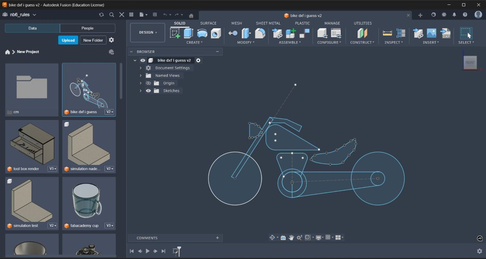
Importing the DXF into Affinity#
I then opened Affinity and imported the DXF file:
-
Opened Affinity
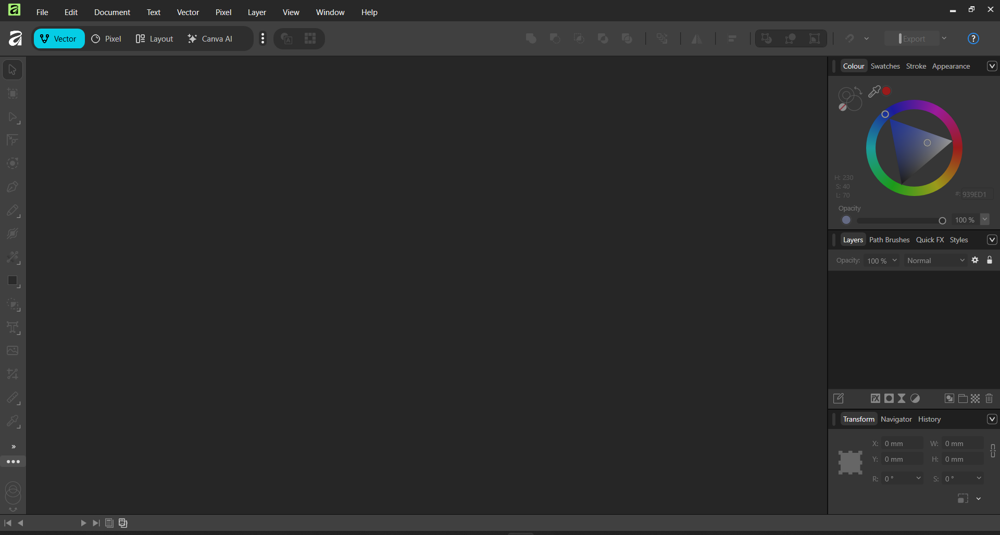
-
Navigated to File → Open
-
Selected the DXF file exported from Fusion 360
DXF Import into Affinity:
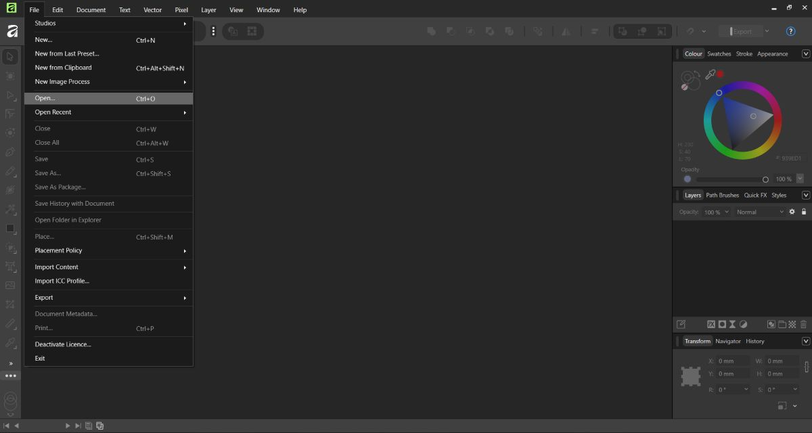
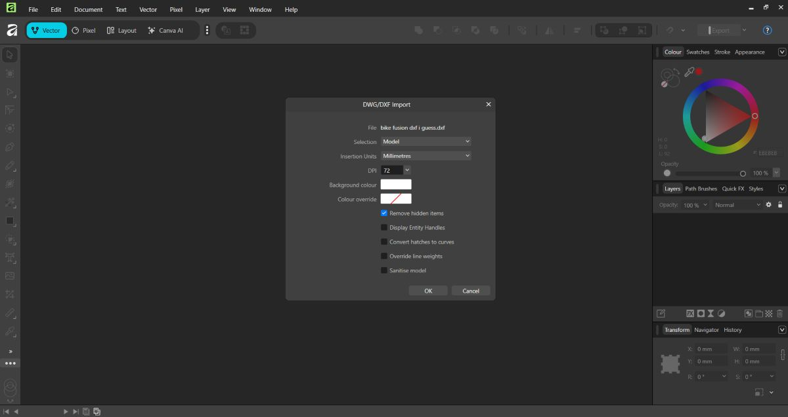
After importing, I repositioned the geometry and mirrored the DXF to achieve the required orientation.
Mirroring and Positioning the DXF:
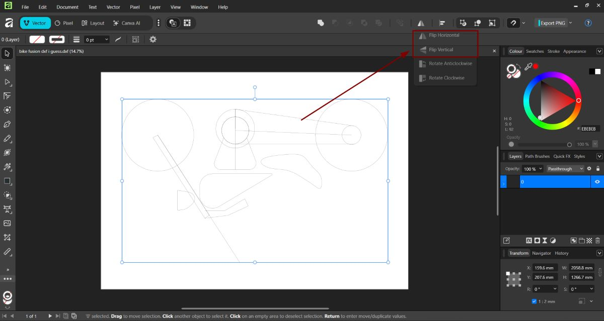
Building Shapes and Cleaning Geometry#
With the DXF correctly positioned, I used the Shape Builder Tool to:
- Combine required regions
- Remove unnecessary construction lines
- Convert raw sketch geometry into clean, closed shapes
This step helped transform the technical sketch into a usable 2D design.
Shape Building and Cleanup:
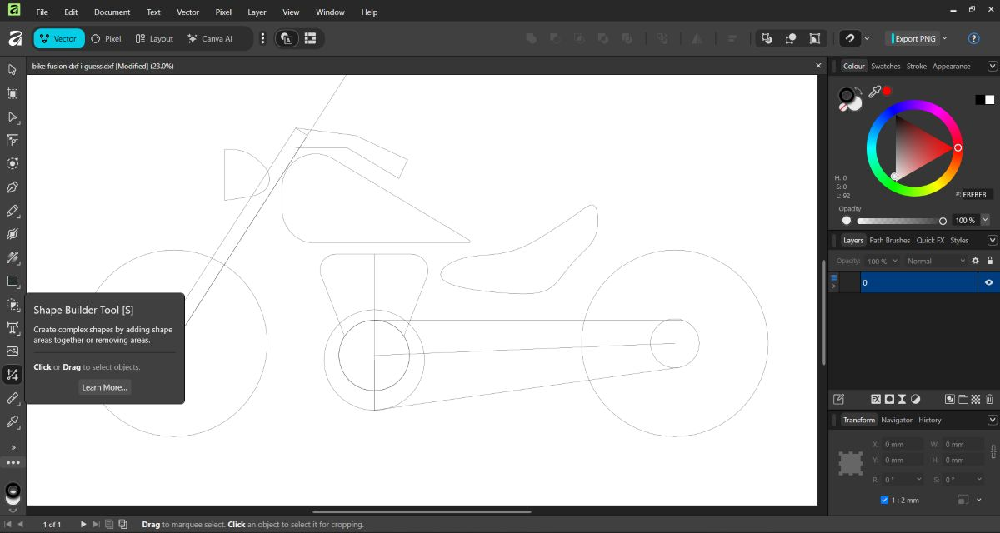
Applying Colors#
Finally, I applied colors to the required areas to improve visual clarity and presentation.
This step helped finalize the 2D render and made the design more readable and visually appealing.
Final Colored Output:
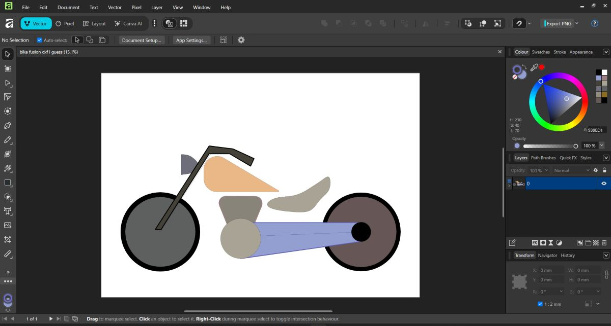
3D Designing#
This week, I explored 3D design using multiple tools to understand different modeling philosophies:
- Parametric modeling
- Non-parametric / direct modeling
- Sculpting-based workflows
The focus was not just on making shapes, but on understanding how different tools think.
Fusion 360 – Parametric Modeling (Comfort Zone)#
I started with Fusion 360, since I am already familiar with the software.
This allowed me to focus on design intent rather than learning a new interface (low friction, high productivity).
Workflow followed:
- Created a sketch on the Front Plane in the first quadrant
- Used simple constraints to define the profile
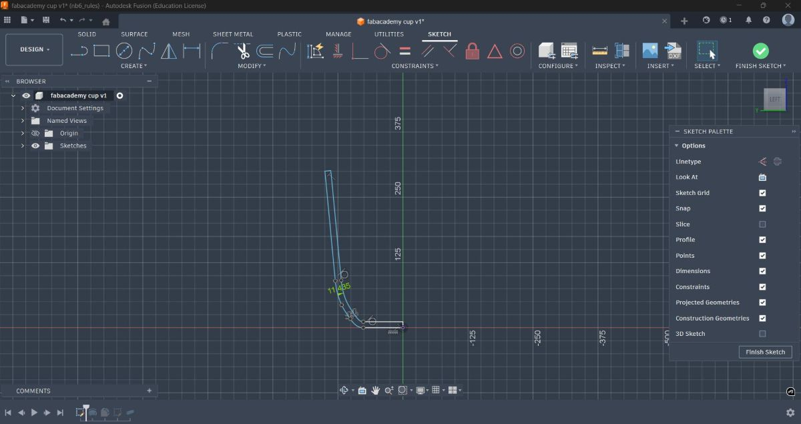
- Applied the Revolve tool to generate the main bowl-like body capable of holding liquid
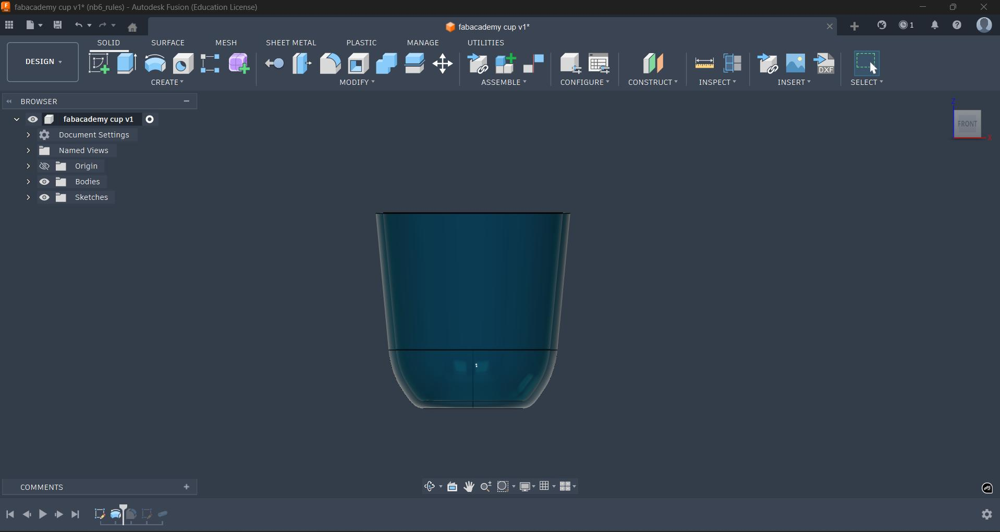
- Created a second sketch on the Front Plane for the cup handle path
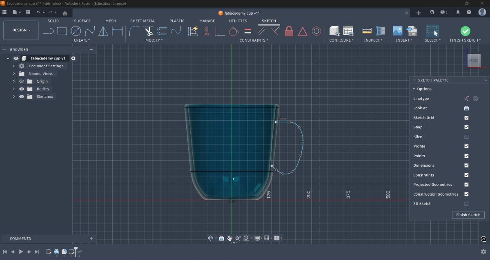
- Used the Pipe tool to create a fully solid handle
- Rendered the final model to achieve a glass-like appearance
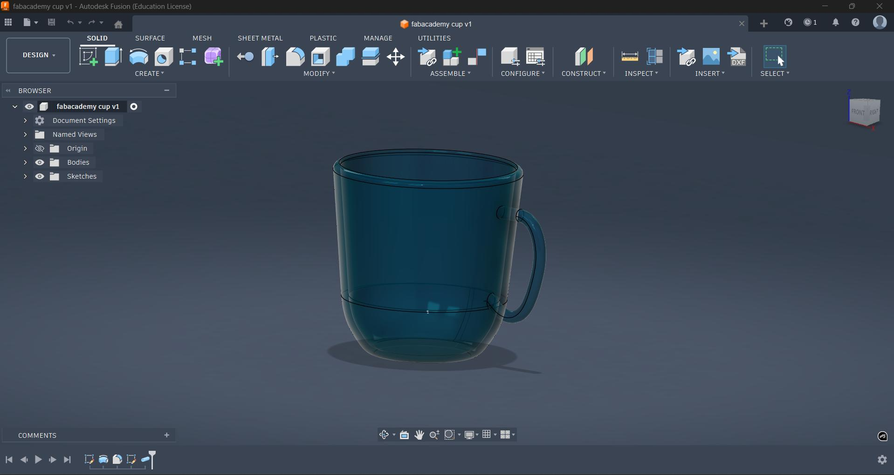
What I took away:
- Parametric modeling is extremely powerful when design intent is clear
- Small sketch changes can update the entire model chef’s kiss 🤌
Tea Cup Modeling Video Tutorial#
This video demonstrates the complete workflow for modeling a tea cup in Fusion 360, from initial sketch to final rendering.#
Static Structural Analysis in Fusion 360#
Before fabricating any physical parts, it’s crucial to validate the design’s structural integrity. Static Structural Analysis (also known as Finite Element Analysis or FEA) helps simulate how a part will behave under real-world loads and forces.
Key Benefits of Static Structural Analysis:
- Identify Weak Points – Find areas prone to stress concentration before manufacturing
- Optimize Material Usage – Reduce weight while maintaining strength
- Predict Failure Modes – Understand how and where a part might fail
- Save Time & Cost – Catch design flaws digitally instead of through physical testing
In Fusion 360, I ran a structural simulation on a L shaped cast iron piece to analyze stress distribution and displacement under load.
Structural Simulation Video#
This video showcases the process of setting up and running a static structural analysis in Fusion 360, demonstrating how to evaluate stress and displacement in a designed part.#
3D Designing Using Tinkercad#
Next, I explored Tinkercad, a tool I am already familiar with.
It is the same platform I previously used to introduce my niece and nephews to 3D modelling, where we created keychains with their names and had them 3D printed.
Accessing Tinkercad#
- Opened the Tinkercad website: https://www.tinkercad.com/
- Logged in and navigated to Designs
- Selected Create → 3D Design
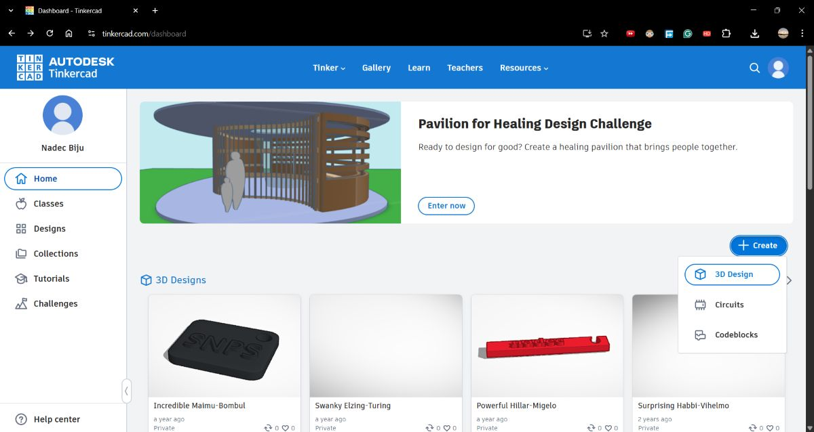
Creating the Cup Body#
- Dragged and dropped a solid cylinder onto the workspace
- Adjusted its dimensions to form the outer body of the cup
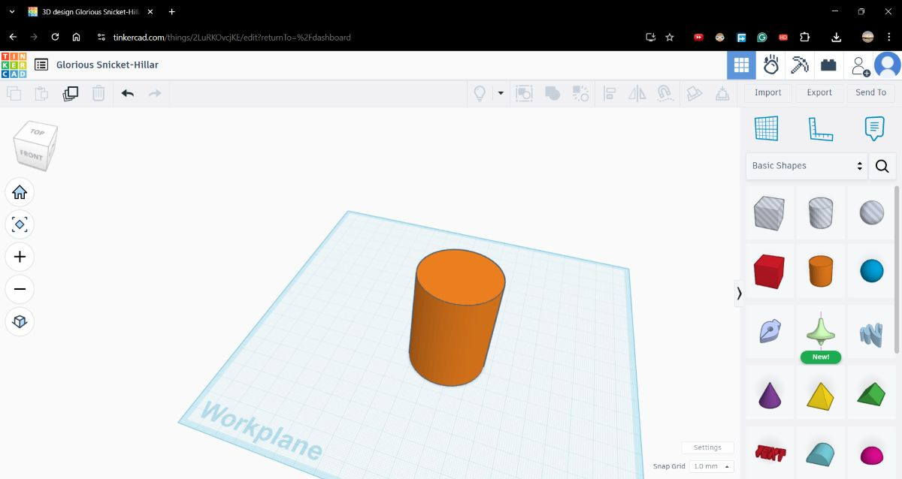
Creating the Hollow Cavity#
- Added a hollow cylinder
- Positioned it inside the solid cylinder
- Planned the placement such that performing a boolean operation would create a hollow cavity
Creating the Handle#
- Added two additional cylinders
- Rotated and positioned them to form the handle of the cup
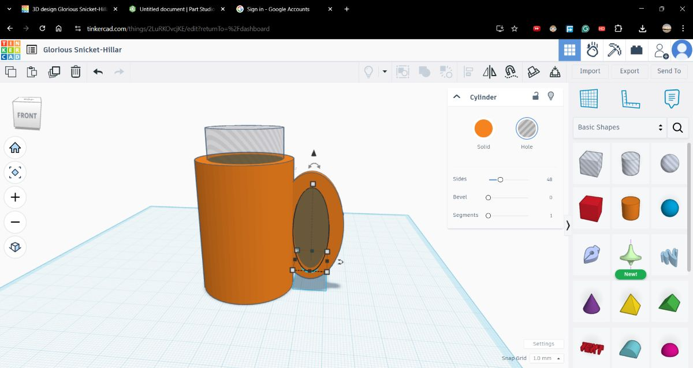
Boolean Operation and Final Model#
- Used the Group feature in Tinkercad (boolean operation)
- Combined and subtracted the shapes as required
The final cup model was obtained as shown below.
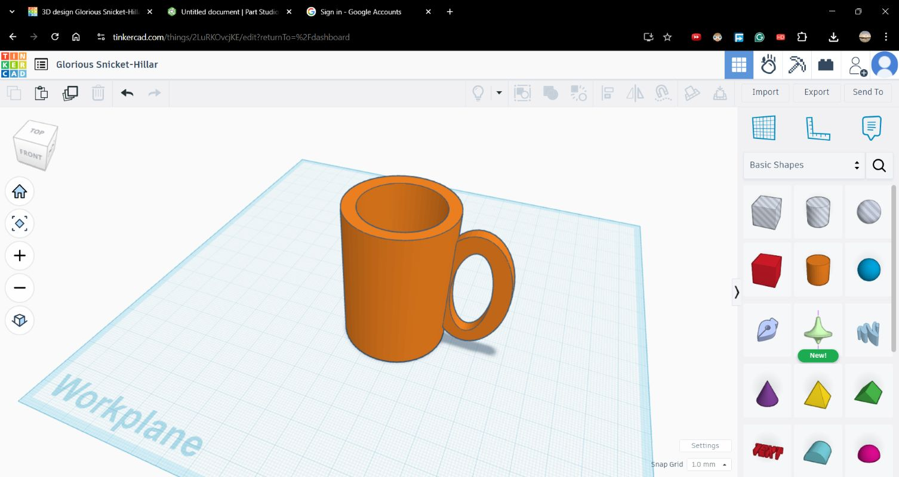
3D Designing Using Onshape#
I also explored Onshape, a cloud-based parametric CAD tool.
Access to Onshape was provided through Fab Academy.
Accessing Onshape#
- Opened the Fab Academy Onshape portal:
https://fab.onshape.com/ - Logged in using the Fab Academy–provided access
- Created a new document
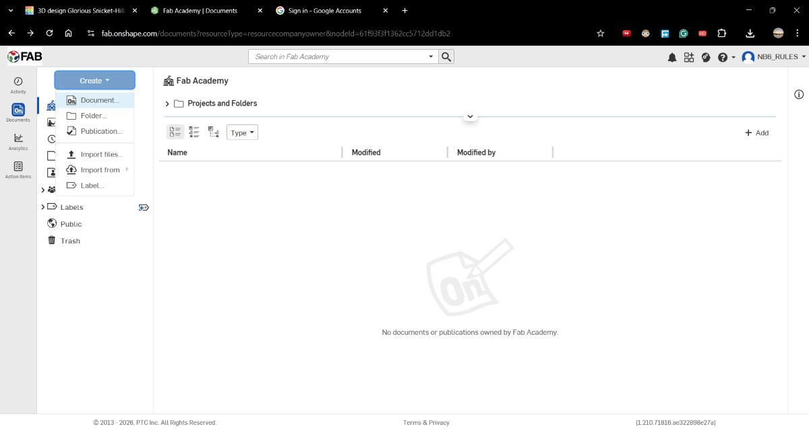
Creating a New Document#
- Named the document according to my requirement
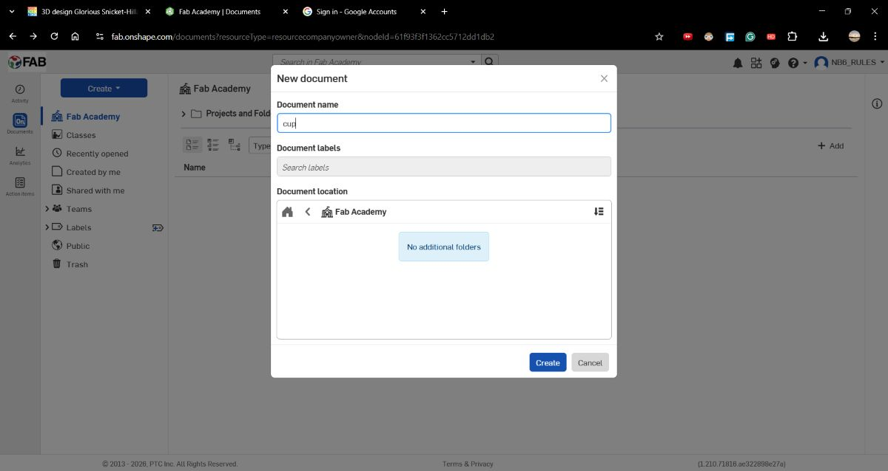
Starting a Sketch#
- Selected the Sketch tool
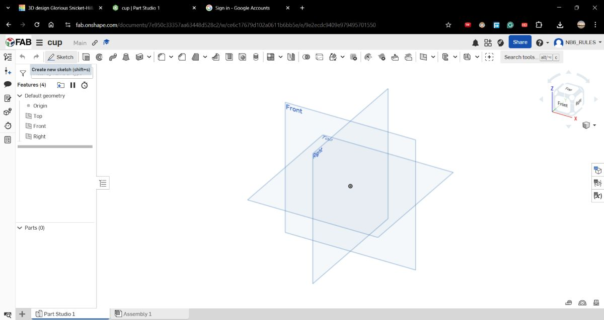
- Chose the Front Plane as the sketch plane
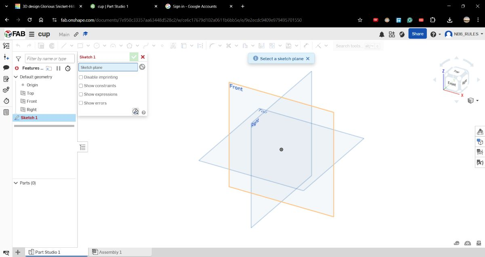
Sketching the Cup Profile#
- Drew the sketch required for creating the hollow portion of the cup
- This sketch was designed specifically for a revolve operation
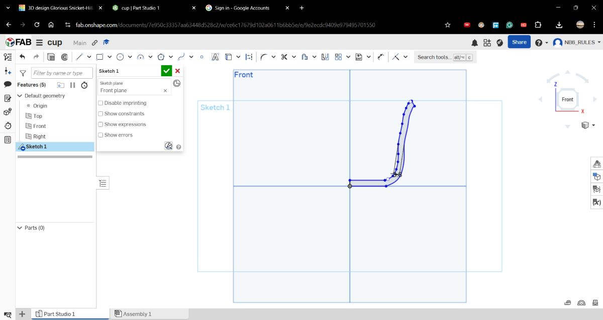
Revolve Operation#
- Used the Revolve tool to generate the 3D cup body from the sketch
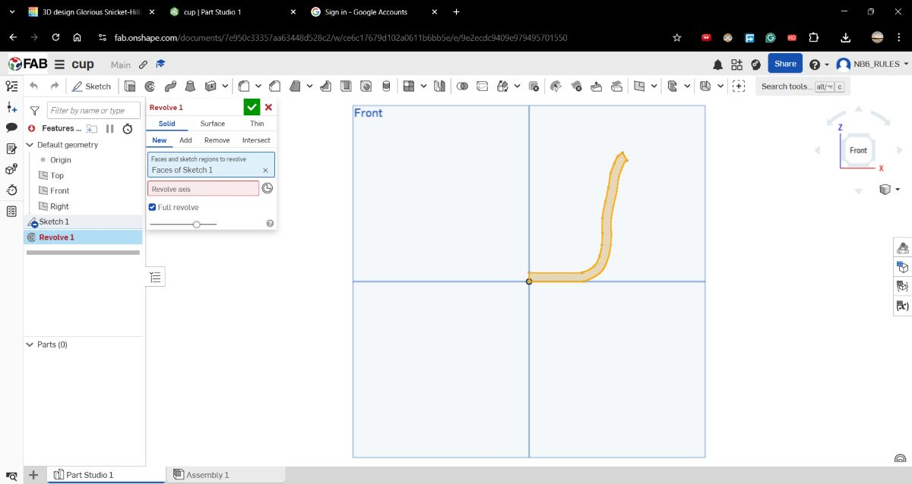
Creating the Handle#
- Sketched a circular profile
- Defined a path for sweeping the handle
- Used the Sweep tool to create the cup handle
Final Model#
The final cup model was obtained after completing the revolve and sweep operations.
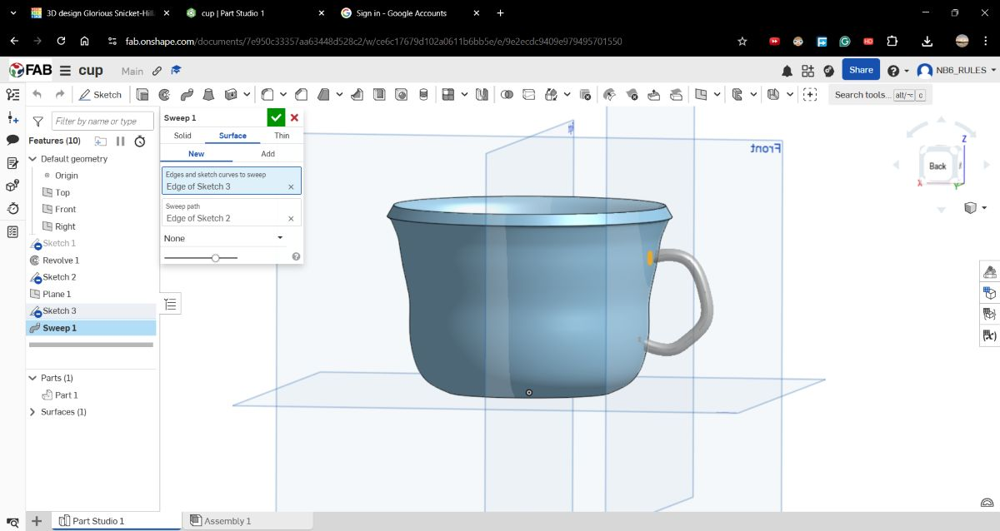
3D Designing Using 3D Builder#
3D Builder is another 3D CAD software I was already familiar with.
It comes bundled with Windows, making it quick to access and easy to experiment with basic solid modeling workflows.
Creating a Model in 3D Builder#
- Opened 3D Builder
- Selected New Scene
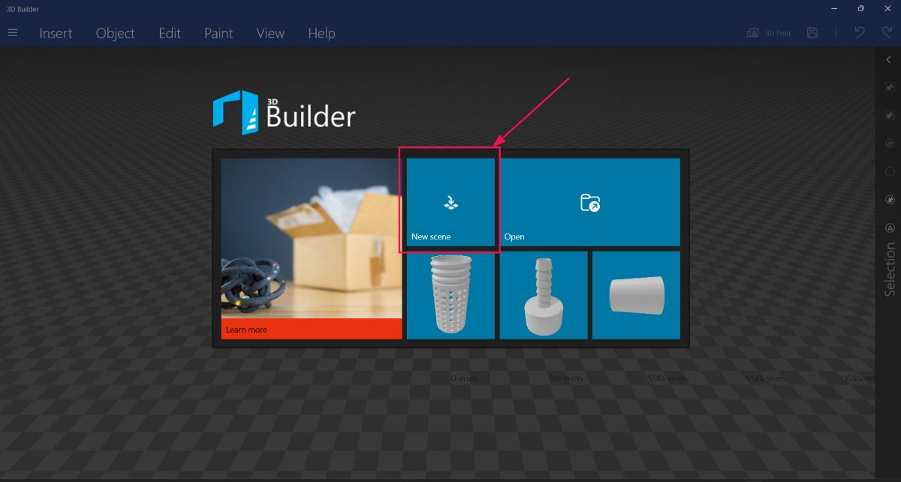
Creating the Cup Body#
- Created a cylinder to form the outer body of the cup
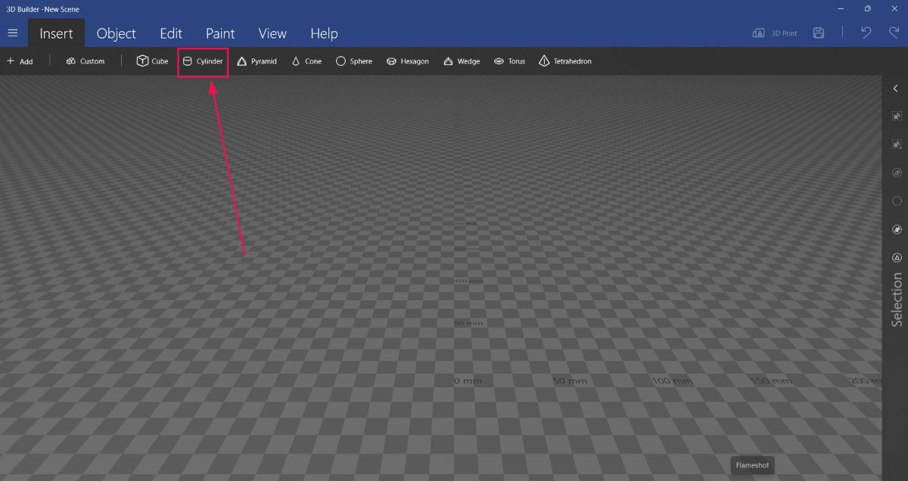
- Created another cylinder
- Scaled it down so it could be subtracted from the first cylinder
- Positioned it inside the outer cylinder to create a hollow cup
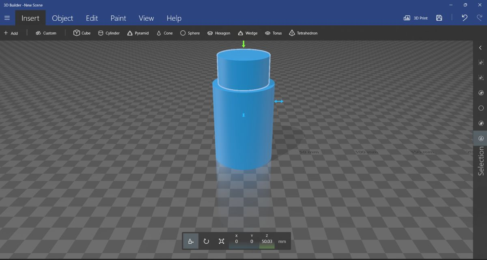
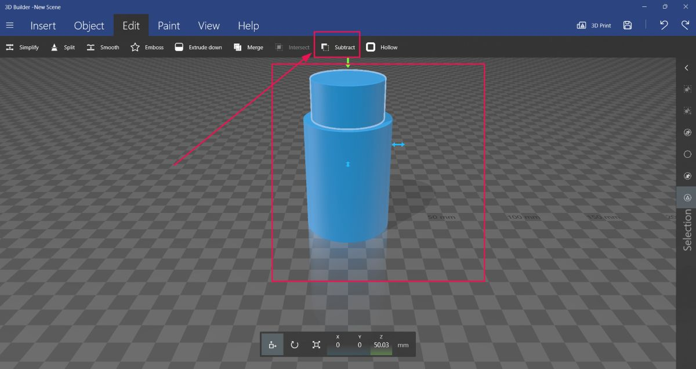
Creating the Handle#
- Imported two additional cylinders
- Rotated and positioned them appropriately to form the handle shape
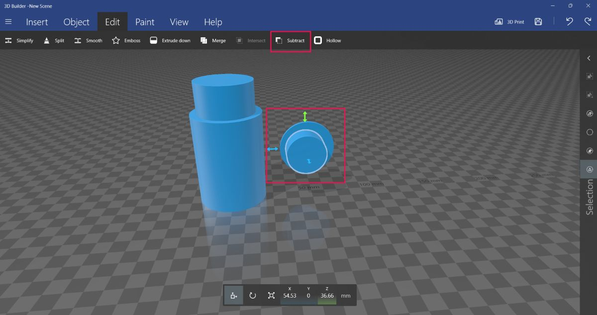
Boolean Operations and Final Model#
- Used subtract and merge operations
- Combined all components to generate the final cup model
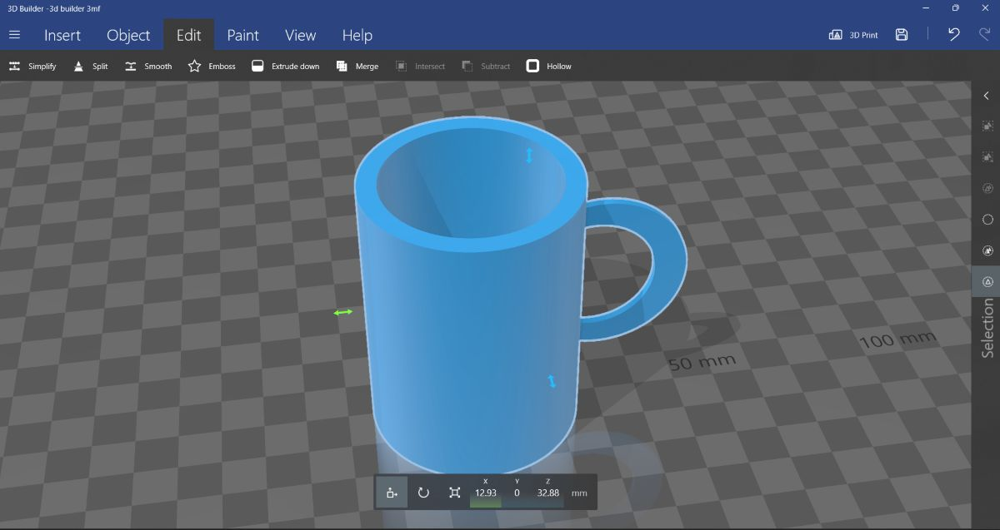
3D Designing Using OpenSCAD#
To explore script-based parametric modeling, I used OpenSCAD, where geometry is created using code rather than a graphical interface.
Opening OpenSCAD#
- Opened OpenSCAD after installation
Creating the Model Using Code#
I created the required code to generate a simple cylindrical coffee mug with a handle.
The code was generated with the help of ChatGPT.
ChatGPT Prompt Used#
Write OpenSCAD code to create a simple cylindrical coffee mug that is hollow inside.
- Height: 90 mm
- Outer radius: 35 mm
- Wall thickness: about 5 mm
- Include a curved side handleOpenSCAD Code#
The following OpenSCAD script was used to create a simple cylindrical coffee mug with a hollow body and a curved handle.
// -------- TORUS (HANDLE SHAPE) MODULE --------
module torus(R, r) {
rotate_extrude($fn=120)
translate([R, 0, 0])
circle(r=r, $fn=60);
}
// -------- COMPLETE MUG (BODY + HANDLE) --------
union() {
// ---- HOLLOW MUG BODY ----
difference() {
// Outer shell
cylinder(h = 90, r = 35, $fn=120);
// Inner hollow space
translate([0,0,3])
cylinder(h = 84, r = 30, $fn=120);
}
// ---- HANDLE ----
translate([35, 0, 30])
rotate([90,0,0])
torus(15, 5);
}Rendering the Model#
The model was rendered in OpenSCAD using the Render function.
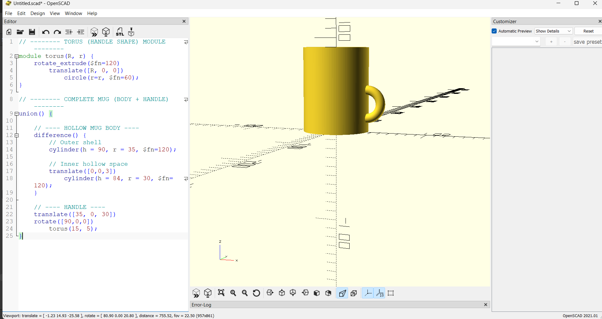
Blender – Non-Parametric Modeling (Out of Comfort Zone)#
Blender was a completely different vibe.
Coming from engineering CAD tools like Fusion 360, SolidWorks, Siemens NX, CATIA, Creo, and Onshape, Blender initially felt:
- Non-linear
- Less constraint-driven
- More artistic than engineering-focused
Basically, I was a fish out of water, but in a good way.
First Exercise: Water Bottle on a Table#
Steps followed:
- Inserted a cylinder and extruded it to the required height
- Used the Bevel tool with high segment count to round off the top and bottom
- Created a second cylinder for the bottle cap
- Applied bevels to give it a realistic look
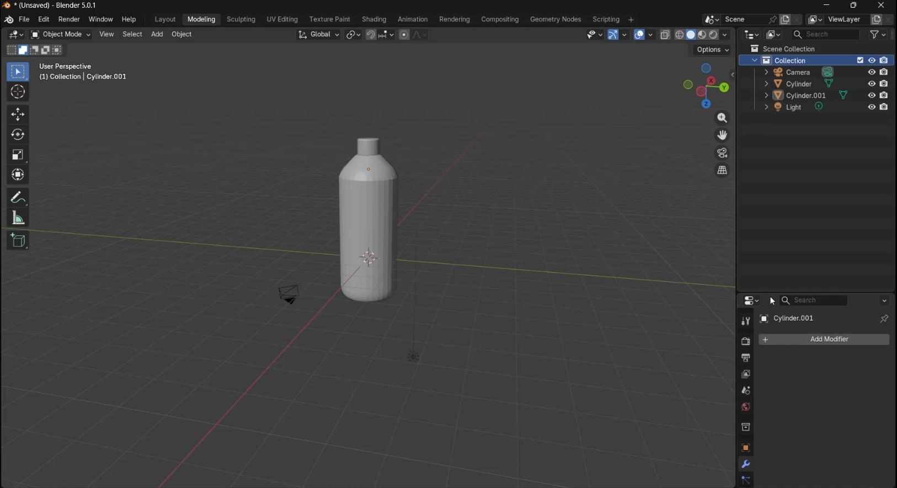
Creating the table:
- Inserted a cube and scaled it to form the tabletop
- Added four cubes to act as table legs
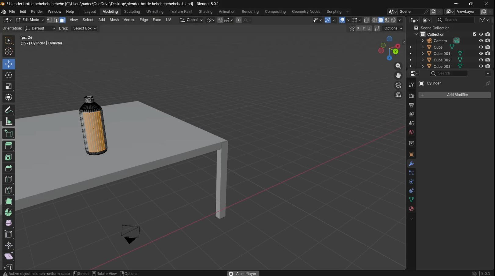
At this stage, my brain was officially fried for the day 💀.
Blender Sculpting – Where It Got Fun#
Later that evening, I discussed Blender sculpting workflows with my close friend Adhityan SV and his brother Aryan SV, who has significant experience working with Blender.
🔗 Reference:
https://www.linkedin.com/in/adithyansv/
https://aryansv807.artstation.com/projects
They introduced me to:
- Sculpt Mode
- Basic sculpting brushes
- Organic modeling workflows
Inspired by this (and slightly distracted by someone playing Clash of Clans next to me), I decided to sculpt a Goblin head — just the head.
Sculpting process:
- Started with a sphere as the base mesh
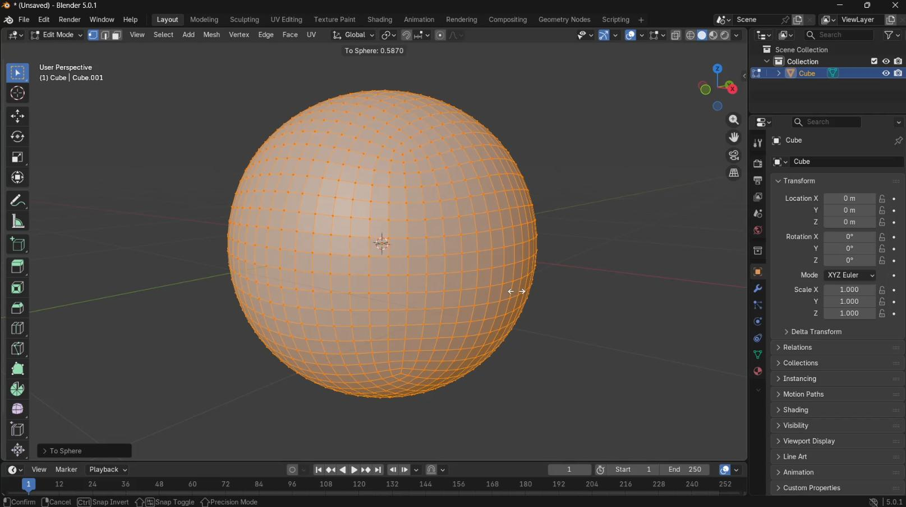
- Used sculpting brushes to define facial features
- Focused on form rather than precision
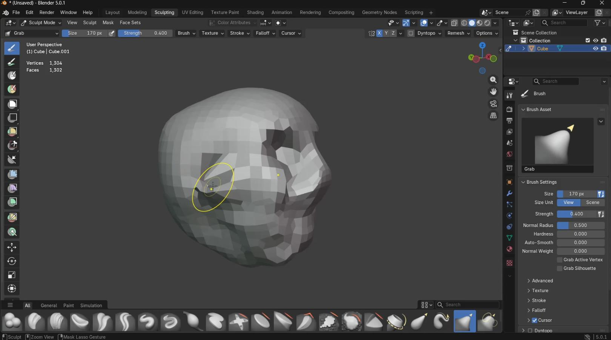
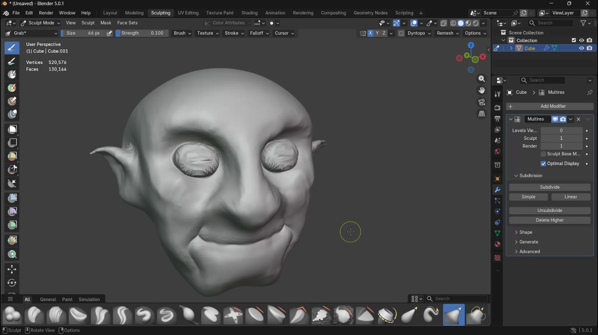
Why this was a W:
- Extremely intuitive and hands-on
- Felt like working with play-dough
- Brought back childhood creativity
- Zero stress, maximum fun (10/10 would sculpt again)
Bird Head Sculpting Video Tutorial#
This video shows the sculpting process of creating a rough bird head in Blender, demonstrating the organic and intuitive nature of the sculpting workflow.
SolidWorks – Back to Home Base#
The final CAD tool I worked with this week was SolidWorks, which is my primary and most comfortable CAD software.
After experimenting with Blender, returning to SolidWorks felt:
- Structured
- Predictable
- Very much home
Strategic Plan for Final Project:
- Fusion 360 will be used for the initial concept and rough renders of my final project
- SolidWorks will be the primary tool for the full engineering CAD and detailed design iterations
- This hybrid approach leverages Fusion’s quick prototyping with SolidWorks’ precision engineering capabilities
Tea Cup Modeling Video Tutorial#
This video demonstrates the complete workflow for modeling a tea cup in SolidWorks, showcasing the structured and predictable approach of this powerful CAD tool.
Final Project Concept – Rough Render (Fusion 360)#
This week, I created the first visual representation of my final project concept in Fusion 360. This rough render serves as a proof-of-concept for the design direction I’m planning to pursue throughout Fab Academy.
Project Concept: Smart Toolbox (Advanced version with embedded intelligence and tracking)
The rough render demonstrates:
- Overall form factor and ergonomics
- General spatial layout of components
- Visual direction for the final design
Final Project Rough Render Video#
This video showcases the initial concept render of the Smart Toolbox, giving a visual preview of the design direction for my final project.
Toolbox Render Images#
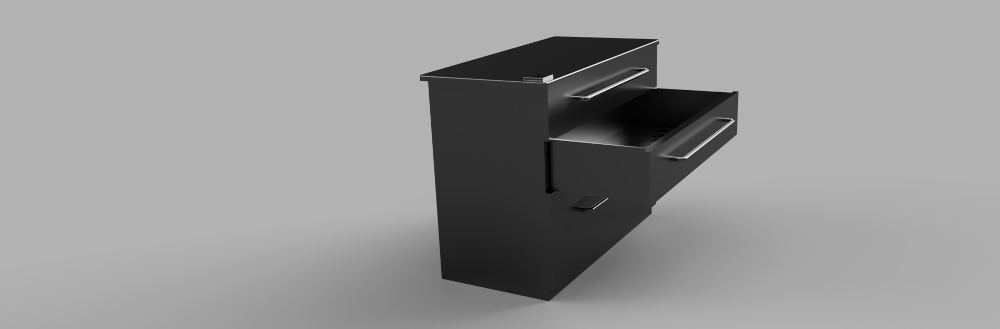
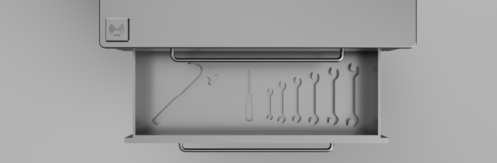
These renders show different angles of the Smart Toolbox concept, highlighting the overall design aesthetic and component layout.
(Final project renders and engineering details will be documented as the project progresses through upcoming weeks.)
Image and Video Compression#
Since Fab Academy has strict limits on image and video sizes, I paid attention to compressing all media files before uploading them to the documentation page.
Image Compression (Windows)#
For image compression, I used the Image Resizer option available in the Windows Photos app.
Workflow:
- Open the image using the Windows Photos app
- Click on the Image Resizer option
- Adjust the resolution and size parameters to reduce file size
- Ensure the image meets Fab Academy size requirements before saving
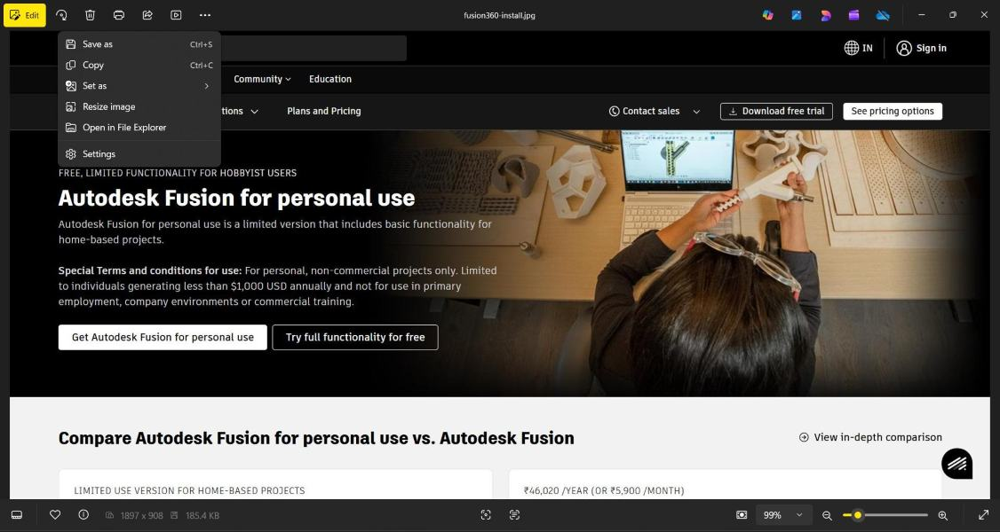
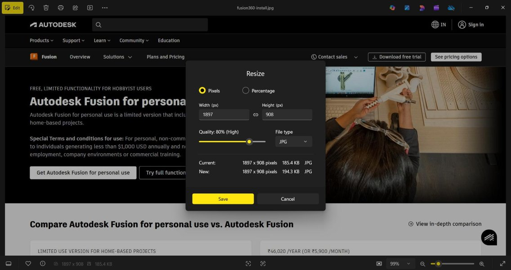
This method was quick and effective for reducing image sizes without noticeably affecting quality.
Video Compression (HandBrake)#
For video compression, I used HandBrake to meet the Fab Academy guideline of approximately 1 MB per minute.
Workflow:
- Open HandBrake
- Import the video file
- Select appropriate resolution and compression settings
- Export the compressed video file
Video Compression Tutorial#
This video demonstrates the complete workflow for compressing videos in HandBrake, showing how to achieve the optimal balance between file size and quality.
HandBrake allowed me to significantly reduce video file sizes while keeping the content clear and usable for documentation.
Reflections#
This week helped me build a strong foundation in understanding how design files are created and prepared for fabrication.
I learned the clear difference between raster and vector graphics, explored multiple 3D tools, and realized the importance of choosing the right software for the right purpose.